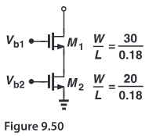

MOS 캐스코드 전류원의 바이어스 설계와 출력 임피던스
주어진 조건
- 회로: Fig 9.50 캐스코드 전류원, 바이어스 전류 $0.5\ \text{mA}$로 설계
- $\mu_n C_{ox} = 100\ \mu\text{A/V}^2$, $V_{TH} = 0.4\ \text{V}$
- $M_1$: $W/L = 30/0.18$, $M_2$: $W/L = 20/0.18$ (그림에 표시)
구할 것
- (a) 채널 길이 변조를 무시할 때 필요한 $V_{b2}$. 그리고 $M_2$가 포화 영역에 머물러야 할 때 $V_{b1}$의 최솟값
- (b) $\lambda = 0.1\ \text{V}^{-1}$일 때 회로의 출력 임피던스

원문 보기
The cascode current source shown in Fig. 9.50 must be designed for a bias current of $0.5\ \text{mA}$. Assume $\mu_n C_{ox} = 100\ \mu\text{A/V}^2$ and $V_{TH} = 0.4\ \text{V}$.
(a) Neglecting channel-length modulation, compute the required value of $V_{b2}$. What is the minimum tolerable value of $V_{b1}$ if $M_2$ must remain in saturation?
(b) Assuming $\lambda = 0.1\ \text{V}^{-1}$, calculate the output impedance of the circuit.
문제를 이렇게 읽어요
아래 $M_2$가 0.5 mA를 정하고 위 $M_1$이 출력까지 전달해요. DC 게이트 전압을 먼저 정하고 같은 동작점에서 출력 저항을 구해요.
이 문제를 봤을 때 떠올릴 개념과 공식
바이어스는 포화 제곱 법칙(saturation square law), 출력 임피던스는 소스 축퇴(source degeneration)로 읽어요. $V_{ov}=V_{GS}-V_{TH}$는 과구동 전압, $g_m=2I_D/V_{ov}$는 전압당 전류 변화, $r_O=1/(\lambda I_D)$는 출력 저항이에요. (a)는 채널 길이 변조를 무시하고 (b)에서만 유한한 $r_O$를 남겨요.
종이에 쓰는 실제 첫 줄
먼저 다음 식을 적어요.
$$I_D=\frac12\mu_nC_{ox}(W/L)_2(V_{b2}-V_{TH})^2$$
왜 이렇게 푸는지 함께 따라가요
(a) 풀이
$M_2$의 소스는 접지이므로 $V_{GS2}=V_{b2}$예요.
$$V_{ov2}=\sqrt{\frac{2(0.5\mathrm{mA})}{100\mathrm{\mu A/V^2}(20/0.18)}}=0.300\mathrm V$$
따라서 $V_{b2}=0.400+0.300=0.700\mathrm V$예요. 위 소자는 같은 전류를 더 넓은 폭으로 흘리므로
$$V_{ov1}=\sqrt{\frac{2(0.5\mathrm{mA})}{100\mathrm{\mu A/V^2}(30/0.18)}}=0.24495\mathrm V$$
중간 노드는 $V_X=V_{b1}-(V_{TH}+V_{ov1})$예요. 아래 소자의 포화 조건 $V_X\ge V_{ov2}$에서 $V_{b1,\min}=0.300+0.400+0.24495=0.94495\mathrm V$예요.
(b) 풀이
바이어스 전압원은 AC 접지로 보내요. 아래는 $v_{gs2}=0$이라 $r_{O2}$만 남고 위 소자의 축퇴 저항이 돼요.
$$r_{O1}=r_{O2}=\frac1{0.1(0.5\mathrm{mA})}=20.0\mathrm{k\Omega}$$
$$g_{m1}=\frac{1.00\mathrm{mA}}{0.24495\mathrm V}=4.0825\mathrm{mS}$$
$$R_{out}=r_{O1}+r_{O2}+g_{m1}r_{O1}r_{O2}=1.673\mathrm{M\Omega}$$
곱 항만 남기는 교재 근사는 $1.633\mathrm{M\Omega}$예요.
완성 답과 검산
(a) 답과 검산
$V_{b2}=0.700\mathrm V$, $V_{b1,\min}=0.945\mathrm V$예요. 경계에서 $V_X=0.300\mathrm V=V_{ov2}$여서 아래 소자의 포화 조건을 만족해요.
(b) 답과 검산
교재 근사 $R_{out}\approx1.63\mathrm{M\Omega}$예요. $g_{m1}r_{O2}=81.65$이고 생략한 40 kΩ은 정확식의 약 2.4%예요. $\mathrm S\cdot\Omega^2=\Omega$로 단위도 맞아요.
이 문제에서 조심할 점
이 그림에서 위가 $M_1$, 아래가 $M_2$예요. 최소 게이트 전압에는 위의 $V_{GS1}$뿐 아니라 아래에 남겨 줄 $V_{ov2}$까지 더해야 해요.
설명을 닫고 규칙을 적용해 봐요
- (a)에서 전류 $0.5\ \mathrm{mA}$와 $M_2$는 그대로 두고 $M_1$만 $W/L=15/0.18$로 줄이면 $V_{b2}$와 $V_{b1,\min}$은 각각 어떻게 되나요? 어느 소자의 과구동 전압이 바뀌는지 먼저 정해 보세요.
- (b)에서 두 소자의 $\lambda$만 $0.05\ \mathrm{V^{-1}}$로 줄이면(전류·형상비 그대로) 곱 항 근사 $R_{out}$은 몇 배, 대략 몇 MΩ인가요?
떠올릴 개념·공식
바이어스는 포화 제곱 법칙(saturation square law), 출력 임피던스는 소스 축퇴(source degeneration)로 읽어요. $V_{ov}=V_{GS}-V_{TH}$는 과구동 전압, $g_m=2I_D/V_{ov}$는 전압당 전류 변화, $r_O=1/(\lambda I_D)$는 출력 저항이에요. (a)는 채널 길이 변조를 무시하고 (b)에서만 유한한 $r_O$를 남겨요.
첫 줄
$I_D=\frac12\mu_nC_{ox}(W/L)_2(V_{b2}-V_{TH})^2$
핵심 판단
이 그림에서 위가 $M_1$, 아래가 $M_2$예요. 최소 게이트 전압에는 위의 $V_{GS1}$뿐 아니라 아래에 남겨 줄 $V_{ov2}$까지 더해야 해요.
검산
$V_{b2}=0.700\mathrm V$, $V_{b1,\min}=0.945\mathrm V$예요. 경계에서 $V_X=0.300\mathrm V=V_{ov2}$여서 아래 소자의 포화 조건을 만족해요.
교재 근사 $R_{out}\approx1.63\mathrm{M\Omega}$예요. $g_{m1}r_{O2}=81.65$이고 생략한 40 kΩ은 정확식의 약 2.4%예요. $\mathrm S\cdot\Omega^2=\Omega$로 단위도 맞아요.